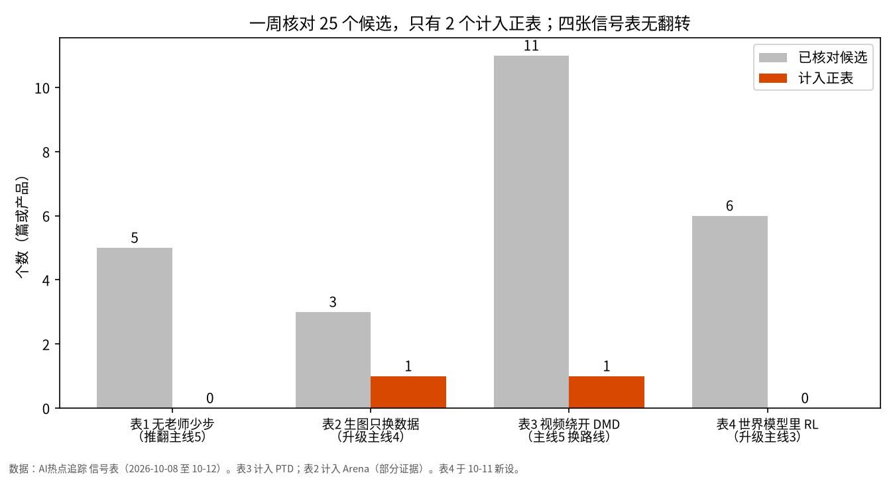

全部周报 · Markdown · 本周时间线 · 单页 HTML
一句话结论：评审进 RL 升一档，并从图像扩到视频【推断】；视频少步降一档，研究主流仍在修 DMD【推断】；OPD 从默认配方变成要看师生重叠率的工具【证实，单篇为主】。四张信号表一周无翻转。
本周净变化
10-08 首版
主线1 LLM 后训练先 OPD/SFT 再 RL【证实】
主线2 在学生样本上学【推断】
主线3 可验证环境在链路两端【推断】
主线4 差距在数据LLM【证实】· 生图【叙事】
主线5 少步：轨迹蒸馏+对抗精修是候选默认【推断】
升一档：评审进 RL图：Arena 偏好+rubric视频：WorldAlign 4D 奖励
降一档：研究主流留在 DMD绕开仅两家：π-Flow · PTDMBDMD：DMD ≡ Drifting
改写：样本来源 / KL 方向 /师生重叠率 三个变量分开
拆分：生图后训练【证实，单篇】生图预训练仍【叙事】
加固+限定：SFT 热身 → OPD → RLOPD 有适用条件
新增观察：世界模型三形态VAE 与因果生成
